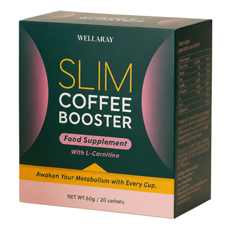
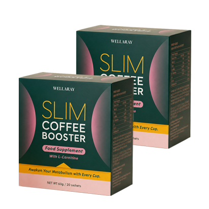
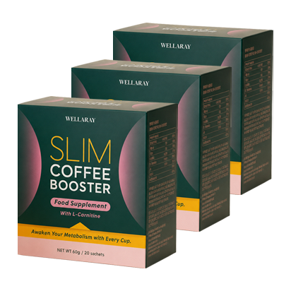

Anyone wanting to lose weight or better control it in the long term quickly finds themselves overwhelmed by a confusing mix of trends, rules, and products. The problem: An approach might seem interesting in theory – and yet fail in everyday life after just two weeks.
Therefore, we have sorted five typical strategies according to a practical criterion: How easily can the routine be permanently integrated into a normal daily routine?
Wellaray Slim Coffee Booster: Coffee as a simple weight management routine
The product idea is simple: a coffee blend with the plant substances mentioned on the offer page, which can be integrated into an existing morning routine.
What is easiest to maintain in everyday life?
Instead of explaining five lengthy methods individually, we've summarized the most important differences in a concise way. For long-term weight management, it's not just the theory that counts – but above all, how easily a routine can be repeated every day.
Why coffee in particular?
Because the habit already exists for many. Instead of learning a completely new daily routine, the product is linked to a familiar one.
This is how the Wellaray Slim Coffee Booster routine works →Our favorite for everyday practicality
Use an existing morning routine: Coffee
This is where it gets practical. Millions of people drink coffee in the morning anyway. A ready-made coffee blend therefore doesn't change the entire daily routine – it simply taps into an existing habit.
This is precisely why Wellaray Slim Coffee Booster is interesting: The product is positioned as a natural coffee blend for metabolism and weight management and combines coffee with various plant substances.
Wellaray Slim Coffee Booster
The manufacturer's website describes a combination of plant extracts that should be integrated into a simple daily routine. Crucially, Wellaray Slim Coffee Booster is not a medicine and does not replace a balanced diet or exercise.
Before / After: How the morning routine changes
We are deliberately not comparing body images here, but rather everyday life. The relevant difference is how many decisions and steps are required in the morning.
7:00 AM: five decisions already made
- Plan breakfast
- Search for multiple products
- Pay attention to dosages and intake times
- Additional steps before work
- On stressful days, the routine is quickly skipped.
7:00 a.m.: Make coffee, drink it, continue.
- Use an already established habit
- Don't establish a separate morning routine.
- The coffee blend becomes a fixed ritual.
- Weight management remains linked to diet and exercise
You drink coffee in the morning anyway?
Then you can see how Wellaray Slim Coffee Booster combines this habit with its weight management positioning.
View Wellaray Slim Coffee Booster ingredients & offer →According to the supply side, what is in the mix?
The product page highlights several plant-based ingredients. Since the saved version does not show complete dosage information per daily serving, we are deliberately not listing any fictitious dosages here.
A simple routine instead of another complicated plan.
If Wellaray Slim Coffee Booster fits into your daily routine, check out the available packages and the currently displayed promotional price now.
Check if Wellaray Slim Coffee Booster is right for me →Why a simple routine can be crucial for weight management
Even well-known nutritionists emphasize that long-term weight management doesn't depend on a single "miracle cure," but rather on consistently sustainable dietary and lifestyle habits. This is precisely the idea behind Wellaray Slim Coffee Booster: instead of changing your entire daily routine, the blend is integrated into an existing habit – your morning coffee.
Important: This classification is a general nutritional science context and not a personal product recommendation from a specific scientist.
*Advertising notice according to campaign guidelines. The price actually displayed on the linked offer page and the discount conditions stated there always apply.
Coffee routine + weight management: less effort, easier to stay consistent
Anyone wanting to lose weight needs, above all, a routine that can be maintained over weeks and months. Wellaray Slim Coffee Booster is positioned precisely for this kind of everyday life: a coffee blend with selected botanicals that, according to the product page, is designed to support metabolism, appetite control, and energy levels within a balanced lifestyle.
The practical advantage is that no additional complicated morning ritual is needed. Instead of planning several products individually, the mixture is linked to a habit that many people already have daily: a cup of coffee.
Why the coffee routine is still only part of the whole picture
A dietary supplement or coffee product can complement a healthy eating routine, but it shouldn't be a miracle cure. For long-term weight management, energy balance, food quality, adequate protein intake, sleep, and exercise remain essential.
That's the real advantage of the coffee approach: not a supposed shortcut, but a low barrier to entry. Anyone who already drinks coffee in the morning doesn't have to learn a completely new habit.
If you already drink coffee and would like to support your weight management with a simpler routine, you can take a look at Wellaray Slim Coffee Booster and the currently available packages.
What users appreciate about the routine
The original product page shows verified reviews from Germany. For this Prelander version, we deliberately focus on practical, everyday features instead of repeating extreme weight claims.
Does this routine fit into your everyday life?
Check the ingredients, package sizes and the currently valid promotional price directly on the offer page.
Check if Wellaray Slim Coffee Booster fits into my routine →Which Wellaray Slim Coffee Booster packages are currently available?
The saved DACH offer page displays three durations. Prices and promotions are subject to change; therefore, each button leads directly to the current offer page.

30 days
60 days
90 daysNote: Availability, total price, shipping and discount conditions will only be displayed definitively on the linked offer page.
Ready to try the Wellaray Slim Coffee Booster coffee routine?
On the offer page you can see the currently available 30-, 60- and 90-day packages as well as the applicable discount.
Discover Wellaray Slim Coffee Booster now →Frequently Asked Questions
Is Wellaray Slim Coffee Booster a medication?
No. The product page positions Wellaray Slim Coffee Booster as a coffee/dietary supplement. It should not be considered a substitute for medical treatment.
Can I definitely lose weight with this?
No. Individual results vary. Body weight depends on many factors; a single product cannot guarantee a specific amount of weight loss.
What should be considered when taking medication?
If you regularly take medication, have pre-existing conditions, are pregnant or breastfeeding, you should consult a doctor or pharmacist about the specific ingredients before taking the medication.
Why are there no exact dosages listed here?
In the version of the offer we have, the complete amounts per daily serving are not visible for all highlighted plant ingredients. Therefore, we are not inventing dosages.
Where can I see the current prices?
Clicking the button will take you to the current DACH offer page. There you will find the currently valid packages, prices, shipping conditions and warranty terms.